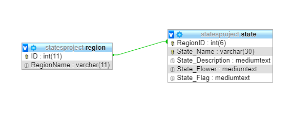

Documentation of the database
Index
Documentation of the database
Schemas of the tables

Design for queries
Printout of structure and contents of database files
Region Table Contents
States Table of Contents
Top